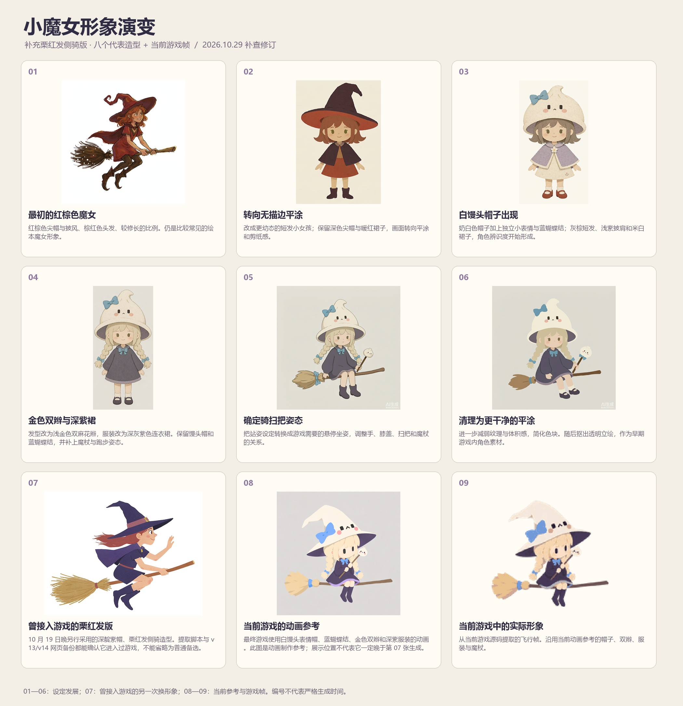
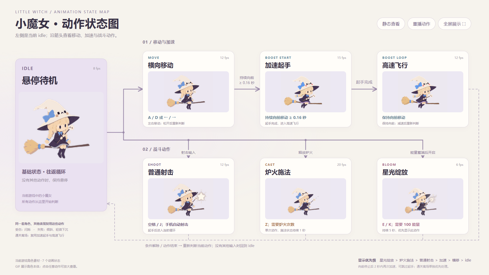
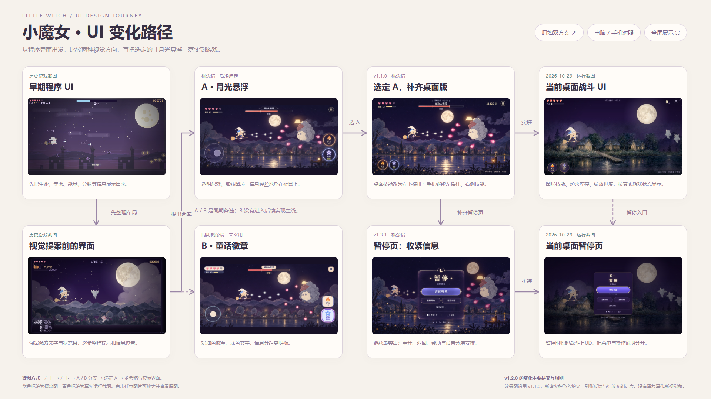
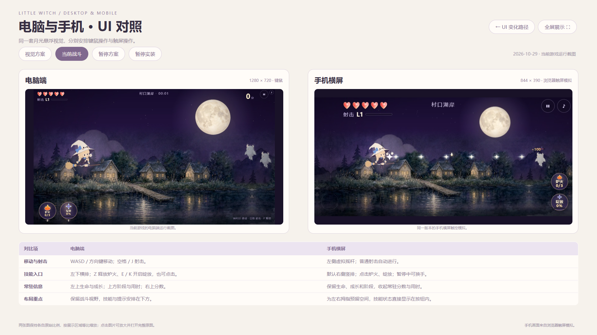
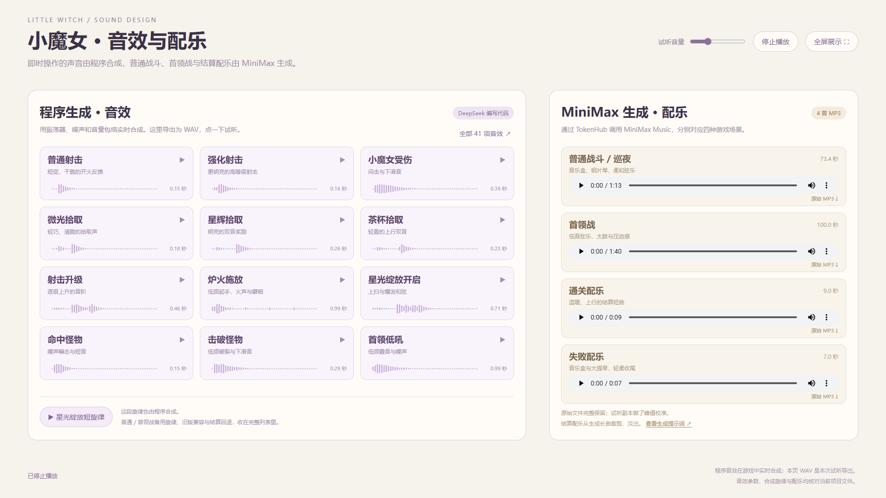

从角色探索、动作制作，到 UI 方案与声音分类。点击下方卡片进入对应网页，图片、GIF 和声音均可离线浏览；GitHub 文件页显示源码时，请先下载仓库再用浏览器打开 HTML。

从早期立绘到当前角色；保留备选方案、曾采用的栗红发版本与完整原图。

16∶9 动作图：idle、移动、加速、射击、施法与绽放，附 GIF。

从程序界面、月光悬浮与童话徽章方案，到选定方案后的实际界面。

视觉方案、当前战斗、暂停方案、暂停实装，四组双端对比。

41 项程序音效、3 段程序旋律及 4 首 MiniMax 配乐，可直接试听。
2026-10-30 整理公开 · 概念稿、运行截图和历史方案分别标注。各目录保留原图及来源说明。